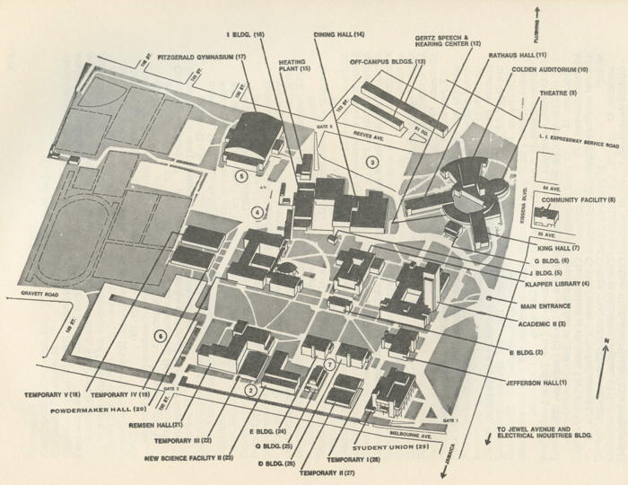

- 1 • Jefferson Hall
- — Administrative Office
- — Registrar’s Office
- — Admissions Office
- — Business Office
- — Personnel Offices
- — Foreign Students Office
- — Reprographic Services
- 2 • B Building
- — Graduate Biology Laboratories
- 3 • Academic II
- — Administrative Offices
- — Word Processing Center
- — Editorial Services
- — Development Office
- — Public Relations
- — Data Processing Offices
- — School of General Studies
- — Adult Collegiate Education (ACE) Program
- — Continuing Education Programs
- — English Language Institute
- — Academic Skills Center
- — Art, Classical and Oriental Languages
- — Comparative Literature
- — German and Scandinavian
- — Mathematics
- — Romance Languages
- — Slavic and East European Languages and Literatures
- — Economics Offices
- — East Asian Studies
- — Jewish Studies
- — Irish Studies
- — Special Studies and Honors
- — Contemporary Civilization
- 4 • Klapper Library
- 5 • J Building
- 6 • G Building
- — Computer Science
- — Humanities Program
- 7 • King Hall
- — Department of Drama and Theatre
- — Television and Sound Laboratory
- — Puerto Rican Studies
- 8 • Community Facility
- — Bookstore
- — Communication Arts and Sciences
- — Library Science
- — Linguistics
- 9 • Theatre
- 10 • Colden Auditorium
- 11 • Rathaus Hall
- 12 • Gertz Speech and Hearing Center
- 13 • Off-Campus Buildings
- — Africana Studies
- — Archaeology
- — Byzantine Studies
- — SEEK
- — OZ
- — RAP
- — Center for Human Relations
- — Institute for Community Studies
- — Latin American Area Studies
- — Upward Bound
- — Health and Physical Education Offices
- 14 • Dining Hall
- — Mailroom
- — Central Receiving
- 15 • Heating Plant
- 16 • I Building
- 17 • FitzGerald Gymnasium
- — Department of Health and Physical Education
- — Health Service Center